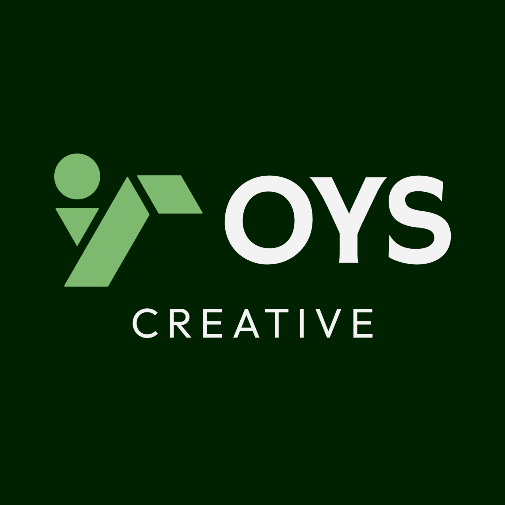
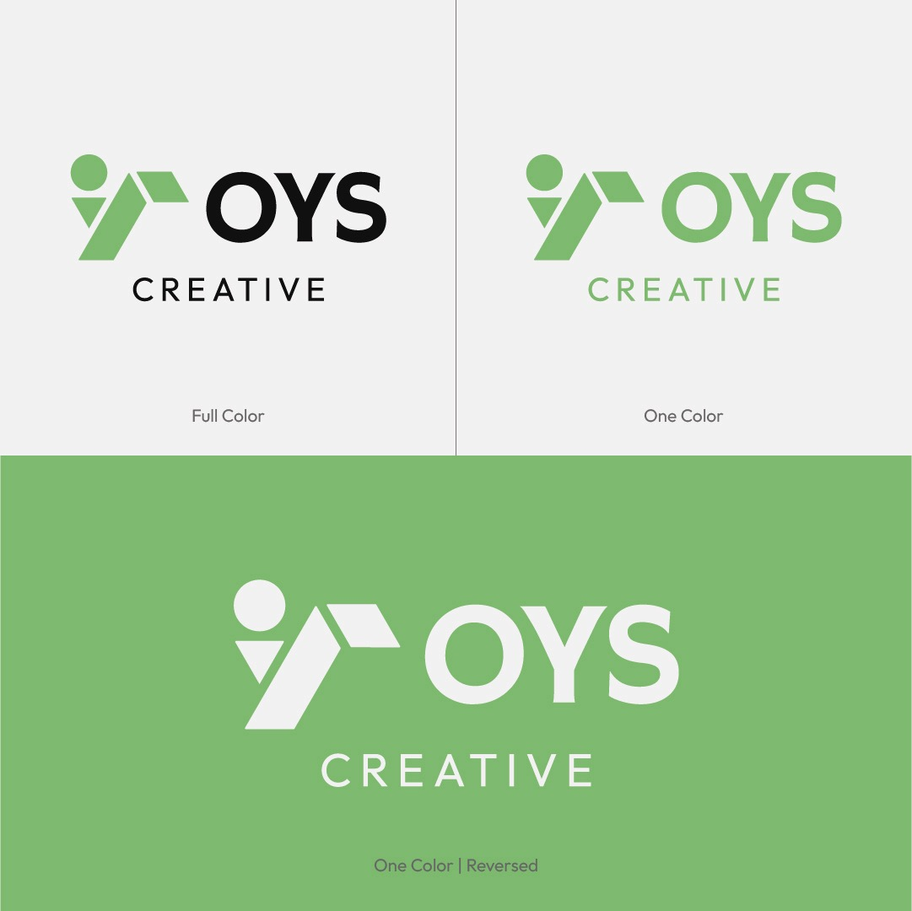
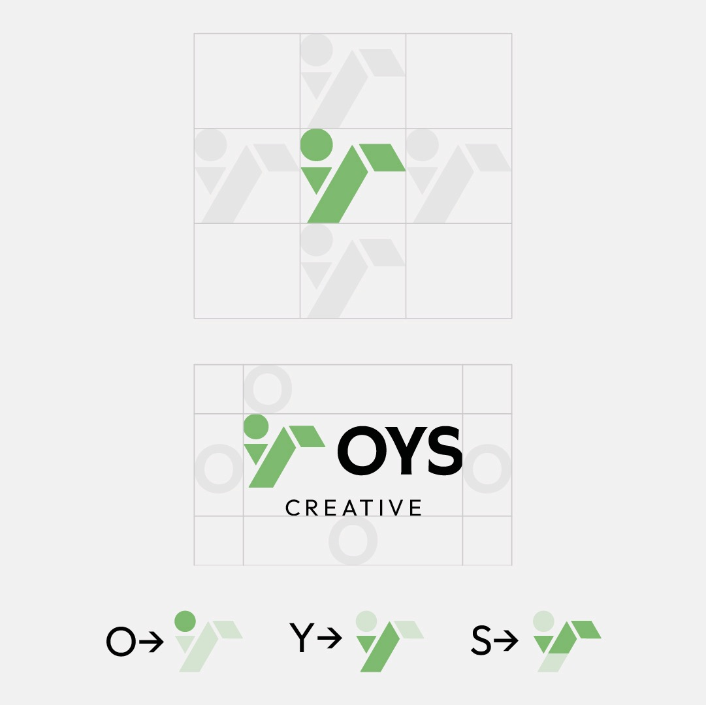
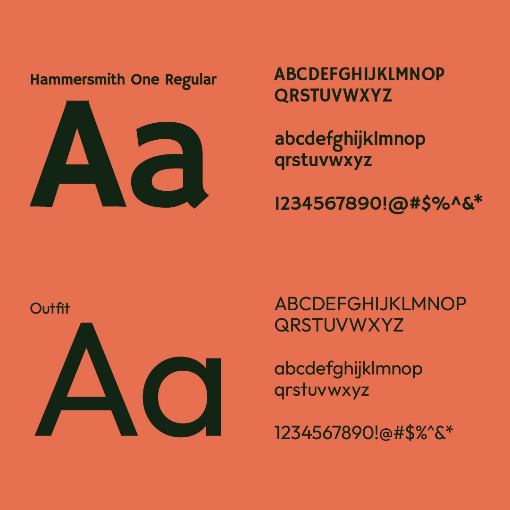
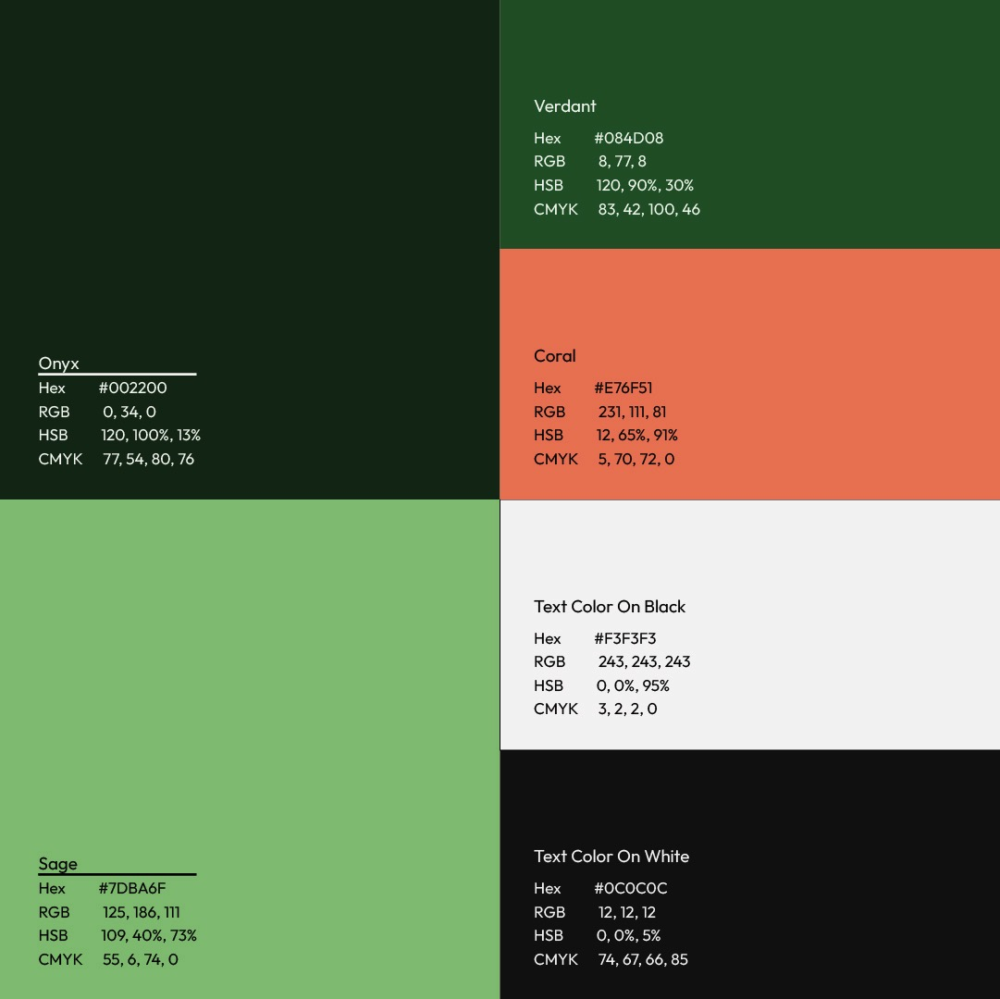
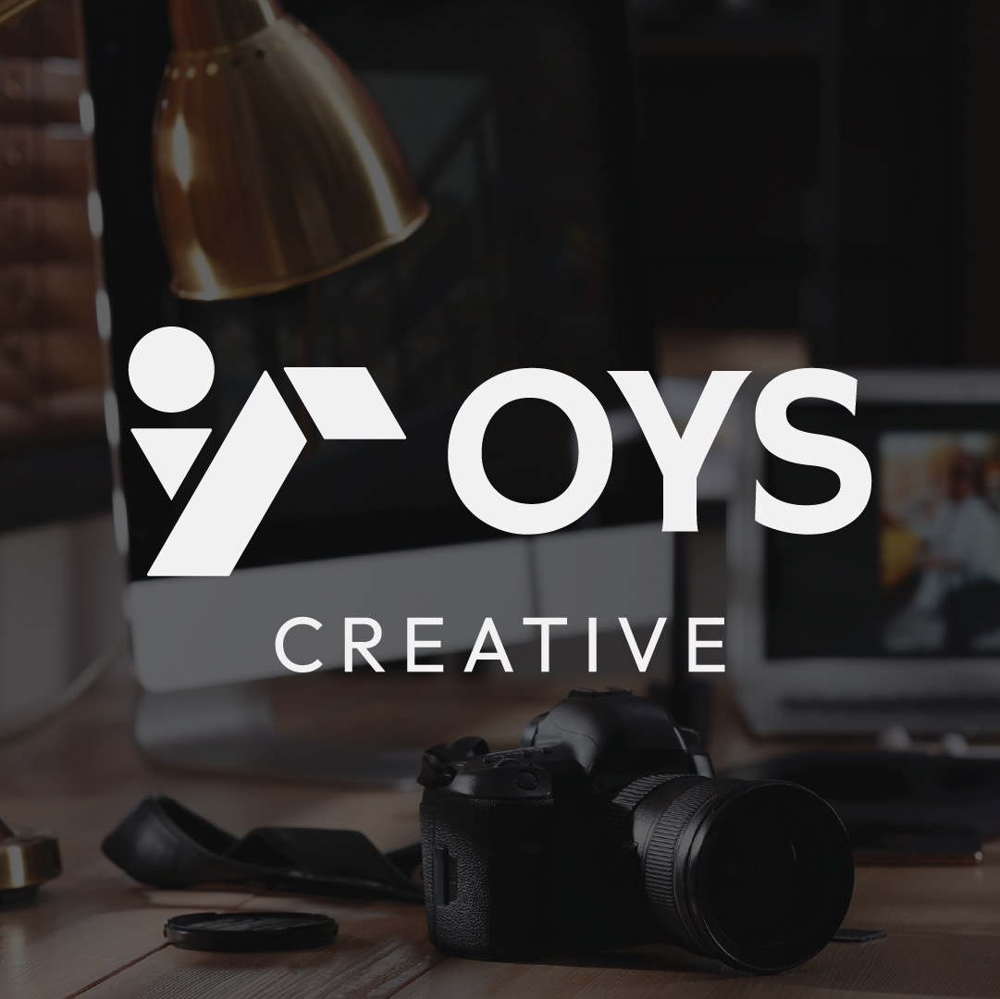
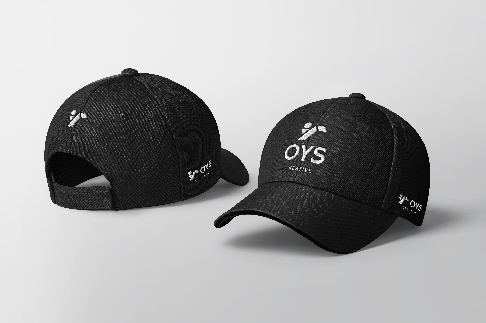
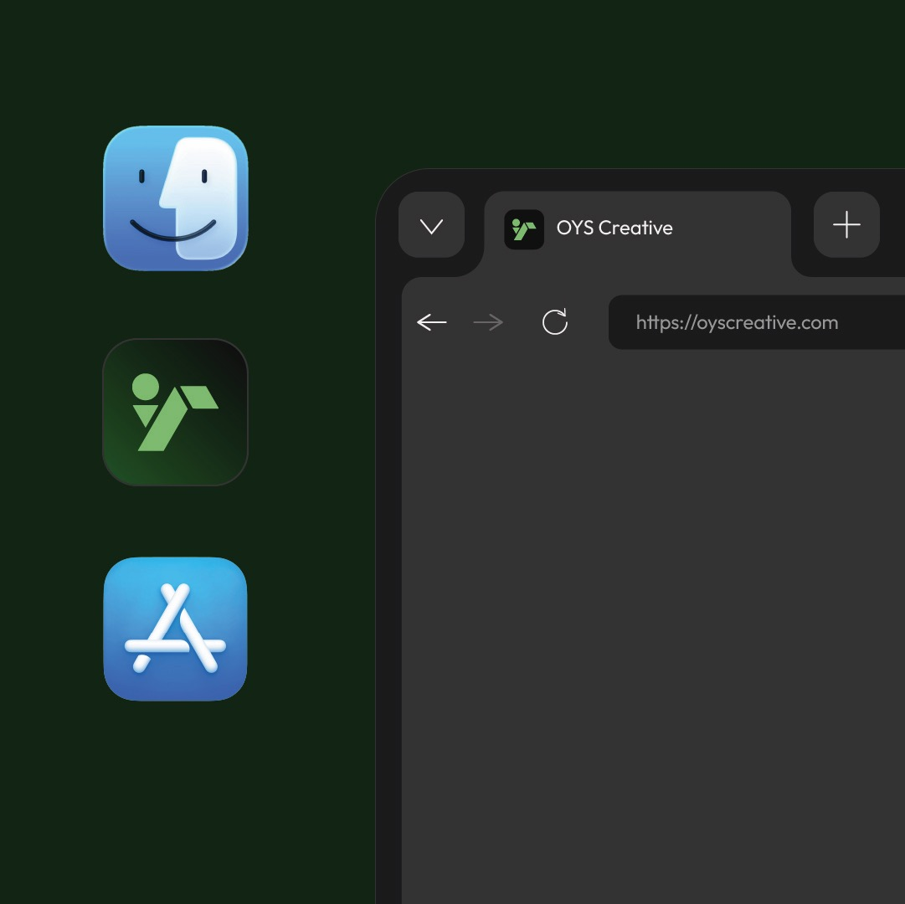

OYS Creative
Designing for yourself is always harder than designing for a client. You become your own toughest critic, overanalyzing every kerning pair and second-guessing every color swatch. OYS Creative is the studio flag I plant for that work.
The brief was straightforward: build a visual identity that reflects my real approach to design. No sterile agency buzzwords, just warm botanical tones, tactile surfaces, and disciplined typography.



Design System & Typography
The palette pairs deep Onyx charcoal with rich Verdant green and energetic Coral accents. For typography, coupling Hammersmith One with Outfit strikes a balance between sculptural character and effortless mobile legibility.



Tactile Merchandise & Digital Touchpoints
A brand system needs to hold up across awkward physical constraints as well as digital screens. From thick-stitched twill caps to sixteen-pixel browser favicons, the folded monogram holds its shape anywhere.


The mark folds the letters O, Y, and S into a continuous geometric cipher: an open circular eye, an angled diagonal pillar, and a sheltering roof plane.
It represents the balance I try to bring to every project: creative curiosity, technical rigor, and design that stands up to heavy everyday use.